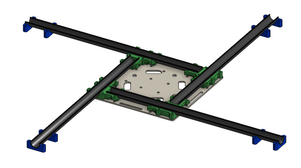
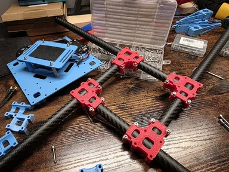
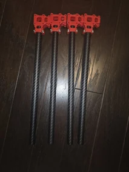

Modular quadcopter
A custom frame with printed components, tube arms, and PX4 flight control


Overview
I designed and built a modular quadcopter intended for GPS-guided missions and straightforward component replacement. The frame combines FDM-printed plates, clamps, and mounts with tube arms.
I integrated the flight controller, GPS, and power distribution within the frame, then configured PX4 and carried out flight tuning.
Frame components and assembly


Build and testing notes
- Earlier project notes describe tuning for structural resonance; a measured vibration spectrum is not available here.
- The available simulation files do not establish physical performance or structural test results.